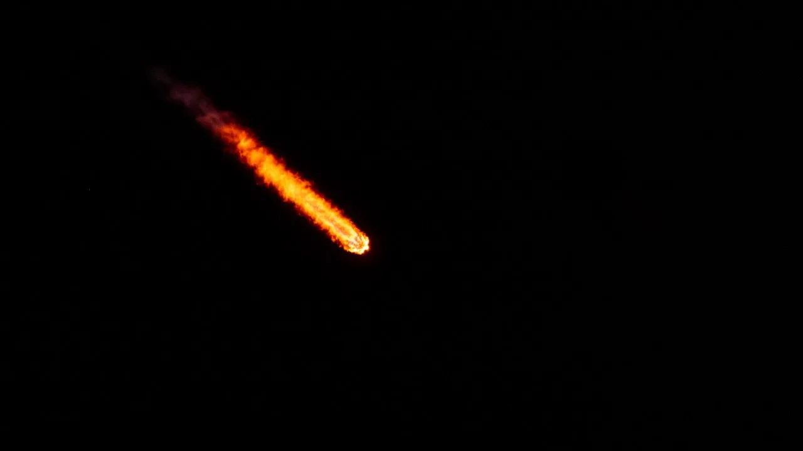

스페이스X를 투자 관점에서 볼 때 가장 먼저 덜어내야 할 표현은 “우주 기업”이라는 큰 단어입니다. 발사체, 위성 인터넷, 유인 우주선, 스타십, 국방 계약, 인공지능 인프라가 한 회사 안에 같이 들어가면 이야기는 화려해지지만, 숫자를 읽는 순서는 오히려 더 엄격해야 합니다. 기대가 큰 회사일수록 어느 사업이 현금을 만들고, 어느 사업이 현금을 먼저 쓰는지 분리해서 봐야 합니다.
2026년 5월 20일 미국 증권거래위원회에 제출된 스페이스X S-1은 이 회사를 단순한 발사 기업이 아니라 우주, 연결성, AI 인프라가 얽힌 복합 기업으로 보여줍니다. 공개시장 투자자에게 중요한 질문은 스페이스X가 얼마나 멋진 장면을 만드는지가 아니라, 스타링크가 얼마나 오래 현금을 벌고 스타십이 언제부터 그 현금흐름을 더 크게 만드는지입니다.
이 글은 스페이스X의 상장 기대를 따라가자는 글이 아닙니다. 아직 직접 투자할 수 없는 기업이라도 공개 자료를 읽으면 우주 기술 테마의 기준점이 생깁니다. 로켓 랩, AST 스페이스모바일, 플래닛 랩스, 한화에어로스페이스 같은 관련 상장사를 볼 때도 스페이스X의 숫자는 시장의 눈높이와 비용 구조를 비교하는 데 쓸 수 있습니다.
현금은 스타링크에서 먼저 보입니다

S-1에서 가장 먼저 눈에 들어오는 숫자는 가입자와 위성 수입니다. 스페이스X는 2026년 3월 말 기준 저궤도에 약 9,600기의 스타링크 위성을 운영하고, 164개 국가와 지역에서 약 1,030만 명의 스타링크 가입자를 보유하고 있다고 밝혔습니다. 우주 산업에서 보기 드문 소비자·기업 반복 매출 기반이 이미 만들어졌다는 뜻입니다.
연결성 사업의 숫자는 더 직접적입니다. 2025년 연결성 부문 매출은 113억8,700만 달러, 영업이익은 44억2,300만 달러, 부문 조정 EBITDA는 71억6,800만 달러로 제시되어 있습니다. 발사 장면은 우주 사업의 상징이지만, 공개시장 투자자가 밸류에이션을 계산할 때 먼저 붙잡을 부분은 이 반복 접속료와 서비스 마진입니다.
다만 가입자 수가 많다고 해서 모든 문제가 끝나는 것은 아닙니다. 스타링크는 각국의 통신 규제, 주파수 조정, 단말기 보급, 지역별 가격 정책을 계속 통과해야 합니다. 가입자가 늘어도 평균 매출이 낮아지거나 단말기 보조금 부담이 커지면 현금흐름의 질은 달라집니다. 그래서 투자자는 가입자 증가율보다 가입자당 매출, 해지율, 기업·항공·해상 고객 비중을 함께 봐야 합니다.
스타십은 약속이 아니라 전환 비용입니다
관련 영상
스페이스X 스타십 7차 시험비행 확장 중계 영상
스타십은 스페이스X의 다음 장면을 바꿀 수 있는 핵심 프로젝트입니다. S-1은 스타십이 2026년 하반기부터 궤도 페이로드 운송을 시작할 것으로 예상한다고 설명합니다. 이 일정이 맞아 들어가면 더 무거운 위성과 더 큰 위성 묶음을 한 번에 올릴 수 있어 스타링크의 배치 속도와 단가가 달라질 수 있습니다.
특히 차세대 스타링크 V3 위성은 스타십으로 배치될 예정이며, 위성당 1테라비트급 다운링크 용량을 목표로 한다는 설명이 붙어 있습니다. 이 숫자가 현실화되면 같은 궤도망 안에서 더 많은 데이터를 처리할 수 있고, 서비스 지역과 기업 고객 확장에도 힘이 붙습니다. 투자자에게 스타십은 멋진 발사체가 아니라 스타링크의 원가 곡선을 낮출 수 있는 운송 인프라입니다.
하지만 여기에는 비용의 시간이 먼저 옵니다. S-1에 따르면 우주 부문은 차세대 스타십 프로그램을 위해 2025년에 30억400만 달러, 2026년 1분기에 9억3,000만 달러의 연구개발비를 부담했습니다. 아직 상용 운송이 본격화되기 전에는 이 비용이 손익계산서에 먼저 남습니다. 스타십 일정이 밀리면 투자자는 미래 원가 절감보다 현재 비용 증가를 먼저 가격에 반영할 수 있습니다.
발사 독점력은 수혜와 압박을 같이 줍니다
스페이스X는 Falcon 로켓으로 이미 시장의 기준을 바꿨습니다. S-1은 Falcon 9이 2026년 3월 말까지 약 620회 궤도 발사를 수행했고, Falcon 계열 로켓의 임무 성공률이 99%를 넘는다고 설명합니다. 또한 2023년 이후 매년 전 세계 궤도 투입 질량의 80% 이상을 스페이스X가 발사했다고 제시합니다.
이 지배력은 관련 상장사에 양면으로 작용합니다. 로켓 랩은 소형 발사와 우주 시스템 사업에서 별도 수요를 확보해야 하고, AST 스페이스모바일은 직접-휴대전화 위성 통신망을 실제 상용 계약으로 증명해야 합니다. 플래닛 랩스는 지구 관측 이미지가 일회성 데이터 판매를 넘어 반복 구독으로 남는지를 보여줘야 합니다. 한화에어로스페이스는 엔진, 방산, 우주 공급망 안에서 수주와 마진을 함께 확인시켜야 합니다.
스페이스X가 시장을 키우면 우주 기술 기업 전체의 관심은 커집니다. 동시에 발사 단가와 배치 속도의 눈높이도 높아집니다. 작은 기업이 좋은 기술을 갖고 있어도 고객은 더 낮은 가격, 더 빠른 발사, 더 높은 신뢰도를 요구하게 됩니다. 그래서 관련종목을 볼 때는 “스페이스X와 같은 시장에 있다”는 말보다 “스페이스X가 만든 가격 기준을 견딜 수 있다”는 근거가 더 중요합니다.
AI 적자와 투자 부담을 같이 읽어야 합니다
S-1에서 눈길을 끄는 또 다른 부분은 AI 부문입니다. 2025년 AI 부문은 32억100만 달러의 매출을 기록했지만, 영업손실은 63억5,500만 달러로 제시되어 있습니다. 연결성 부문이 강한 현금을 만들고 있어도, AI와 스타십처럼 투자가 큰 사업이 같은 회사 안에 있으면 전체 손익은 더 복잡해집니다.
스페이스X의 2025년 전체 매출은 186억7,400만 달러, 조정 EBITDA는 65억8,400만 달러였지만 영업손실도 25억8,900만 달러로 남아 있습니다. 2026년 1분기에도 매출은 46억9,400만 달러였고 조정 EBITDA는 11억2,700만 달러였지만, 영업손실은 19억4,300만 달러였습니다. 이 구조는 “성장하는데 왜 손실인가”라는 단순한 질문보다 “어느 부문이 벌고 어느 부문이 쓰는가”라는 질문을 요구합니다.
공개시장 투자자가 스페이스X를 직접 보게 된다면 첫 번째 체크리스트는 매출 규모가 아니라 부문별 현금흐름입니다. 스타링크 가입자당 매출과 해지율, 스타십 상용 발사 일정, 차세대 위성 배치 속도, 연구개발비 증가율, 설비투자, 주파수와 국가별 규제, AI 부문의 손실 축소 여부를 같은 표에 놓고 봐야 합니다.
관련종목은 기준점과 거리를 함께 놓고 고르는 편이 좋습니다. 스페이스X 글에서 미국 종목을 먼저 보는 이유는 우주 기술 테마의 직접 비교가 더 쉽기 때문입니다. 로켓 랩은 발사와 우주 시스템, AST 스페이스모바일은 위성-휴대전화 연결, 플래닛 랩스는 지구 관측 데이터, 한화에어로스페이스는 한국 우주·방산 공급망의 관점에서 서로 다른 거리로 스페이스X와 연결됩니다.
비교의 핵심은 누가 더 빨리 성장하느냐가 아닙니다. 수주잔고가 실제 매출로 바뀌는 속도, 매출총이익률의 개선 여부, 현금 소진 속도, 추가 자금조달 가능성, 고객 집중도, 경쟁사 대비 가격 결정권을 차례로 보셔야 합니다. 스페이스X가 직접 상장되지 않았더라도 이 기준을 만들면 관련 상장사를 더 차분하게 비교할 수 있습니다.
결론적으로 스페이스X는 우주 산업의 꿈을 보여주는 회사이면서 동시에 우주 기술 투자자의 채점표를 바꾸는 회사입니다. 스타링크가 벌어들이는 현금, 스타십이 낮출 수 있는 원가, AI와 연구개발이 요구하는 투자 부담, Falcon 계열의 발사 신뢰도가 한꺼번에 움직입니다. 스페이스X를 읽는다는 것은 특정 기업의 유명세를 따라가는 일이 아니라 우주 기술 테마 전체의 비용 기준과 현금흐름 기준을 새로 잡는 일입니다.
이 글은 특정 종목의 매수나 매도 추천이 아닙니다. 투자 판단 전에는 스페이스X의 최신 공시, 관련 상장사의 공식 실적 자료, 각국 규제와 계약 공시를 함께 확인해 주세요.